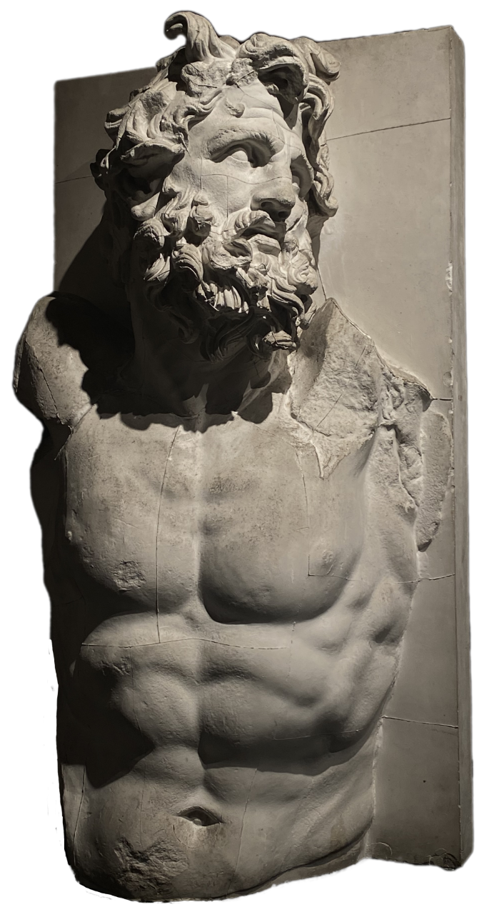
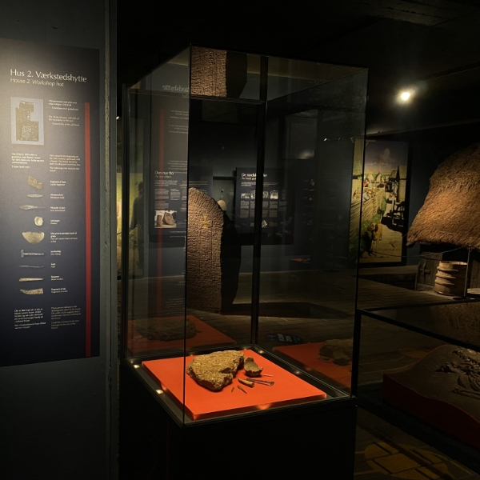
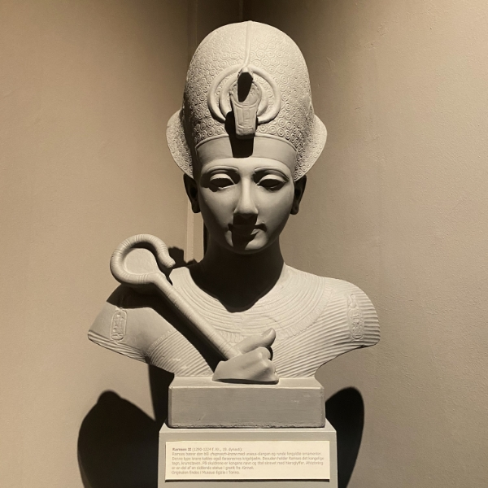
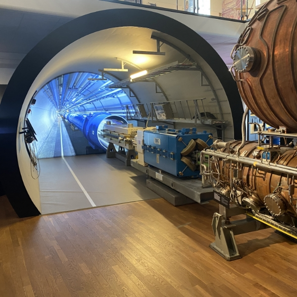

Aarhus
Hidden
Museums

Vikingmuseet
The Viking Museum is a small underground museum in central Aarhus, Denmark. It is located at
Sankt Clemens Torv, beneath the Nordea bank building. The Viking Museum is administered by
the Moesgård Museum and financed by both Aarhus Municipality and Nordea.
Hear the stories about Harald Bluetooth's fortification, the Snaptun stone with the god Loki
and the skeleton that was found in the middle of the floor. Find out more about the city's
ramparts and the inhabitants of the Viking Age at the place where the stories took place.
LEARN MORE
Antikmuseet
The Museum of Ancient Art in Aarhus, Denmark is museum dedicated to the ancient art and
cultural history of the mediterranean countries, in particular Ancient Greece, Etruscan
civilization and Ancient Rome. The museum is situated in the university campus in the
district Midtbyen.
The museum was founded in 1949 by a professor from Aarhus University as a study collection
in classical archaeology. The basis of the collection was 500 artifacts from the ancient
cultures around the mediterranean and a number of plaster casts of antique sculptures.
LEARN MORE

